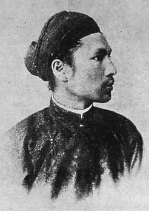

Hàm Nghi (chữ Hán: 咸宜 3 tháng 8 năm 1871 - 14 tháng 1 năm 1944), tên thật Nguyễn Phúc Ưng Lịch (阮福膺𧰡), là vị hoàng đế thứ tám của nhà Nguyễn, triều đại phong kiến cuối cùng trong lịch sử Việt Nam. Là em trai của vua Kiến Phúc, năm 1884 Hàm Nghi được các phụ chính đại thần Nguyễn Văn Tường và Tôn Thất Thuyết đưa lên ngôi ở tuổi 13. Sau khi cuộc phản công tại kinh thành Huế thất bại năm 1885, Tôn Thất Thuyết đưa ông ra ngoài và phát chiếu Cần Vương chống thực dân Pháp. Nhân danh ông, Tôn Thất Thuyết đã phát động phong trào Cần Vương, kêu gọi văn thân, nghĩa sĩ giúp vua, giúp nước. Phong trào này kéo dài đến năm 1888 thì Hàm Nghi bị bắt. Sau đó, ông bị đem an trí ở Alger (thủ đô xứ Algérie) và qua đời tại đây năm 1944 vì bệnh ung thư dạ dày. Do áp lực của Pháp nên nhà Nguyễn không lập miếu hiệu cho ông. Ngày nay, lịch sử Việt Nam xem ông cùng với các vua chống Pháp gồm Thành Thái, Duy Tân là ba vị vua yêu nước trong thời kỳ Pháp thuộc.
Bị lưu đàyVào 4 giờ sáng ngày 25 tháng 11 năm 1888, vua Hàm Nghi bị đưa xuống tàu đi vào Lăng Cô. Trước phút rời xa quê hương, nhà vua nhìn lên bờ, không nén được cảm xúc vì nỗi niềm riêng và vận nước nên đã òa khóc. Từ Sài Gòn, ngày 13 tháng 12 năm 1888, vua Hàm Nghi bị đưa xuống chiếc tàu mang tên "Biên Hòa" vượt đại dương đi Bắc Phi. Do không quen đi trên biển, nhà vua bị say sóng liên miên nhưng vẫn không hề thốt ra một lời kêu ca, oán thán. Chiều chủ nhật, 13 tháng 1 năm 1889, Hàm Nghi đến thủ đô Alger của Algérie (tiếng Việt gọi là A Lợi Tư). Lúc này ông vừa bước qua tuổi 18. Mười ngày đầu, Hàm Nghi tạm trú tại L'hôtel de la Régence (Tòa Nhiếp chính). Sau đó, ông được chuyển về ở Villa des Pins (Biệt thự Rừng thông) thuộc làng El Biar, cách Alger 5 km.
Ngày 24 tháng 1, Toàn quyền Tirman của Algérie tiếp kiến và mời Hàm Nghi ăn cơm gia đình. Ít ngày sau, qua Toàn quyền Tirman, cựu hoàng nhận được tin mẹ là bà Phan Thị Nhàn (vợ thứ của Kiên Thái vương) đã mất vào ngày 21 tháng 1 năm 1889 tại Huế. Trong mười tháng tiếp đó, Hàm Nghi nhất định không chịu học tiếng Pháp vì ông cho đó là thứ tiếng của dân tộc xâm lược nước mình và vẫn dùng khăn lượt, áo ngũ thân theo nếp cũ ở quê hương. Mọi việc giao thiệp đều qua thông ngôn Trần Bình Thanh. Nhưng về sau, thấy người Pháp ở Algérie thân thiện, khác với người Pháp ở Việt Nam, nên từ tháng 11 năm 1889 ông bắt đầu học tiếng Pháp. Vài năm sau, Hàm Nghi có thể nói và viết tiếng Pháp rất giỏi.
Hàm Nghi cũng giao du cùng những người nổi tiếng thuộc giới thượng lưu và trí thức Pháp, chính những mối quan hệ này đã giúp ông được giữ đãi ngộ dư dả hơn so với những vị quân vương cũng bị lưu đày ở Alger như Béhanzin (1845-1906), Ranvalona III (1961 - 1917) và Duy Tân (1899 - 1945). Tuy thái độ của nhà cầm quyền Pháp tại Alger với Hàm Nghi là có sự ưu ái, nhưng thư từ, quà tặng của Hàm Nghi luôn bị giám sát chặt chẽ. Nên trong thư tín, các cuộc trò chuyện của Hàm Nghi luôn không đề cập hay nhắc đến chính trị. Suốt cuộc đời ông vẫn mặc trang phục Việt Nam, đội khăn đống, để tóc dài và yêu cầu đầu bếp nấu món ăn Việt Nam mỗi tuần một lần cho mình.
Hoàng đế Đại Nam

Chân dung Vua Hàm Nghi
Hoàng đế Đại Nam
2 tháng 8 năm 1884 - 19 tháng 9 năm 1885
Kiến Phúc
Đồng Khánh
Thông tin chung
3 tháng 8 năm 1871 Huế, Đại Nam
14 tháng 1 năm 1944 Alger, Algérie, Pháp
Làng Thonac, Vigeois,Dordogne, Pháp
Đại Nam (Việt Nam)
Kinh
Tử Xuân (tên gọi hồi nhỏ và bút danh của ông sau này) -Henri (tên thân mật nhà Vua tự đặt khi ở Pháp)
Hàm Nghi (咸宜)
Nhà Nguyễn
Đăng đàn cung
Nguyễn Phúc Hồng Cai
Phan Thị Nhàn